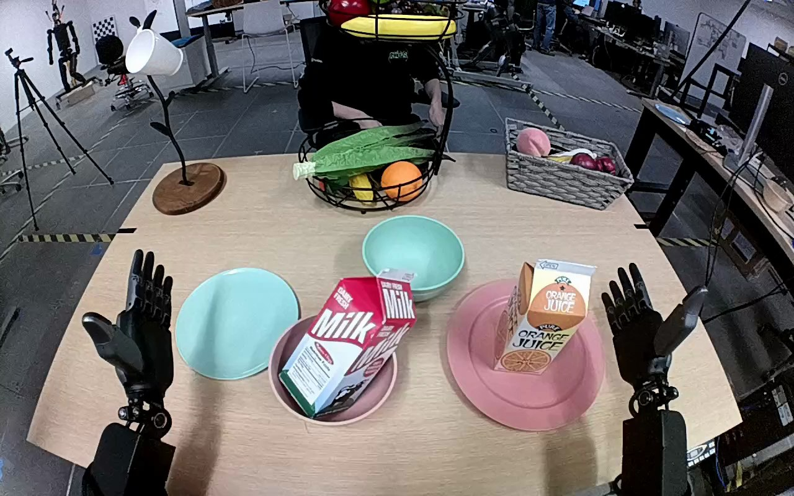

NVIDIA GR1 · 18
Video 18

Annotation
From the dedicated visual review of this video (humanoid_action_v1). Plain text · JSON
Observed outcome
Orange juice carton upright with its base inside the center cyan bowl; pink plate empty. Right hand still adjacent to upper carton, thumb lifted away from the front; left hand open and uninvolved.
Hand roles
- Right
Active manipulator: wraps fingers/thumb around orange juice carton, lifts from pink plate, transports to central cyan bowl and lowers upright; ends adjacent to upper carton as grasp opens.
- Left
Remains open at the near left side, with slight incidental motion; no object contact, support or transfer.
Robot-side evidence
- Description
View is forward from behind the robot arms: each forearm extends from its corresponding lower-side body position into the workspace, rather than a front-facing opposing robot. Visible palm/thumb handedness and continuous forearm placement identify the arm at image right as anatomical right and the opposite arm as anatomical left. The carton grasp is performed by the image-right arm.
- Confidence
high
- Uncertainty
Shoulders and torso are outside the image; side assignment uses the forward body-relative forearm arrangement and hand morphology.
Chronology
| Frames | Observation |
|---|---|
| 0–27 | Both hands remain open near the near edge of the table; orange juice carton stands upright on pink plate. Right hand begins moving inward toward carton. |
| 28–43 | Right palm approaches the carton side and fingers close around its upper body with the thumb across the front. Left hand stays open and separate. |
| 44–57 | Right hand maintains the grasp and begins raising carton; carton remains upright over the plate. |
| 58–83 | Carton clears the plate and is carried upright forward and inward over the central cyan bowl by the right hand alone. |
| 84–109 | Right hand lowers upright carton into cyan bowl; the carton base disappears within the bowl and approaches its bottom. |
| 110–119 | Carton stands upright inside the cyan bowl. Right thumb/fingers begin opening away from its front but right hand remains beside the upper carton without a clear withdrawal. |
Uncertainties
- Complete separation of all right fingertips from the carton is not visible at the endpoint; no fully withdrawn hand or unambiguous full release is claimed.
Complete review record action_review.json
{
"prompt_protocol": "humanoid_action_v1",
"prompt_provenance": "visually_authored_from_video_and_initial_frame",
"reviewed_contact_sheets": [
"sheet_001.jpg"
],
"inspected_frame_stride": 2,
"inspected_sampled_frame_count": 60,
"initial_scene": "Robot-facing forward view of two forearms extending into a tabletop workspace. The orange juice carton stands on the pink plate at the right; its destination is the smaller cyan bowl farther forward near center, rather than the larger cyan vessel at left. Both hands initially open.",
"observed_sequence": [
{
"start_frame": 0,
"end_frame": 27,
"action": "Both hands remain open near the near edge of the table; orange juice carton stands upright on pink plate. Right hand begins moving inward toward carton.",
"confidence": "high"
},
{
"start_frame": 28,
"end_frame": 43,
"action": "Right palm approaches the carton side and fingers close around its upper body with the thumb across the front. Left hand stays open and separate.",
"confidence": "high"
},
{
"start_frame": 44,
"end_frame": 57,
"action": "Right hand maintains the grasp and begins raising carton; carton remains upright over the plate.",
"confidence": "high"
},
{
"start_frame": 58,
"end_frame": 83,
"action": "Carton clears the plate and is carried upright forward and inward over the central cyan bowl by the right hand alone.",
"confidence": "high"
},
{
"start_frame": 84,
"end_frame": 109,
"action": "Right hand lowers upright carton into cyan bowl; the carton base disappears within the bowl and approaches its bottom.",
"confidence": "high"
},
{
"start_frame": 110,
"end_frame": 119,
"action": "Carton stands upright inside the cyan bowl. Right thumb/fingers begin opening away from its front but right hand remains beside the upper carton without a clear withdrawal.",
"confidence": "high"
}
],
"arm_hand_roles": {
"right": "Active manipulator: wraps fingers/thumb around orange juice carton, lifts from pink plate, transports to central cyan bowl and lowers upright; ends adjacent to upper carton as grasp opens.",
"left": "Remains open at the near left side, with slight incidental motion; no object contact, support or transfer."
},
"anatomical_side_evidence": {
"description": "View is forward from behind the robot arms: each forearm extends from its corresponding lower-side body position into the workspace, rather than a front-facing opposing robot. Visible palm/thumb handedness and continuous forearm placement identify the arm at image right as anatomical right and the opposite arm as anatomical left. The carton grasp is performed by the image-right arm.",
"confidence": "high",
"uncertainty": "Shoulders and torso are outside the image; side assignment uses the forward body-relative forearm arrangement and hand morphology."
},
"terminal_state": "Orange juice carton upright with its base inside the center cyan bowl; pink plate empty. Right hand still adjacent to upper carton, thumb lifted away from the front; left hand open and uninvolved.",
"uncertainties": [
"Complete separation of all right fingertips from the carton is not visible at the endpoint; no fully withdrawn hand or unambiguous full release is claimed."
],
"annotation_discrepancies": [],
"evidence_frame_indices": [
0,
30,
42,
58,
78,
108,
119
],
"selected_execution_status": "success",
"execution_status_basis": "Visible carton placement into cyan bowl is achieved. Complete hand release is not established and is deliberately omitted from the prompt.",
"inspection_coverage": {
"full_sequence": "All 60 every-second-frame samples from 0 through 118 visually inspected on sheet_001.jpg.",
"native_resolution": "Source first-frame PNG plus native frames 30,42,58,78,108,119 inspected for approach, grasp, lift, carry, lowering and final state.",
"final_frame": 119
},
"video_id": "18",
"dataset": "NVIDIA_GR1_100",
"dedicated_review_agent": "review_gr1_18",
"review_source_video": "NVIDIA_GR1_100/18/original/original.mp4",
"source_frame_count": 120,
"source_fps": 20.0,
"native_detail_frames": [
30,
42,
58,
78,
108,
119
],
"world_model_prompt": "The robot grasps the orange juice carton on the pink plate with its right hand, lifts it clear, and carries it upright toward the cyan bowl behind the plate. It lowers the carton into the bowl, leaving it upright with the right hand still beside its upper half. Keep the camera fixed; preserve robot geometry, physically valid joint motion, and normal gripper opening and closing.",
"original_task_instruction": "Use the right hand to pick up orange juice carton from pink plate to cyan bowl.",
"selected_segment": {
"start_frame": 0,
"end_frame_exclusive": 120,
"reason": "Complete original single-task reference; no cropping or trimming requested."
},
"source_video_sha256": "5fdc6f54defd901112d8ec1a321bc6a1bfed35be75c18f6f0543e7b206965a6b",
"review_completed_at": "2026-10-13T17:46:58.177774+00:00"
}